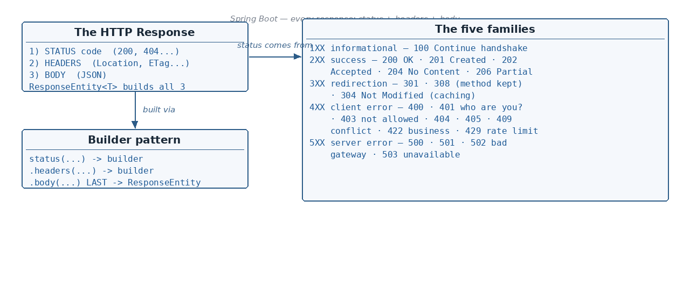

@ResponseStatus — setting the status without ResponseEntity
☕ 11 min read · 🎬 Video walkthrough · 📊 UML diagram · 💻 Runnable code
⚡ In a nutshell — The three parts of every HTTP response — status code, headers, body · ResponseEntity<T> and its builder pattern (status → headers → body) · @ResponseBody vs @RestController vs @Controller · The five status-code families 1XX–5XX and every code from the notes
The notes open the Exception Handling chapter with this foundation: whatever a controller returns, the actual HTTP Response always has three parts —

ResponseEntity<T> is Spring's class to create the response with full control over all three:
return ResponseEntity.status(HttpStatus.OK).headers(headers).body("Hi");
Body should be last. It is actually kind of using the Builder design pattern: status(...) and headers(...) all return a builder object, and the body(...) method call returns the actual ResponseEntity object.
// the builder's terminal methods:
<T> ResponseEntity<T> body(T body); // sets the body and builds
<T> ResponseEntity<T> build(); // builds with NO body
For a response without a body, use ResponseEntity<Void> and finish with build():
return ResponseEntity.status(HttpStatus.OK).build();
By default, 200 is the status code set when you do not specify one.
@RestController
@RequestMapping("/api/users")
public class UserController {
// 1) full form — status + headers + body (body MUST be last)
@GetMapping("/{id}")
public ResponseEntity<String> getUser(@PathVariable String id) {
HttpHeaders headers = new HttpHeaders();
headers.add("X-Request-Handled-By", "user-service");
return ResponseEntity.status(HttpStatus.OK).headers(headers).body("Hi");
}
// 2) shortcut — 200 OK with a body
@GetMapping
public ResponseEntity<List<String>> allUsers() {
return ResponseEntity.ok(List.of("alex", "maria"));
}
// 3) 201 Created + Location header, after creating a resource
@PostMapping
public ResponseEntity<String> createUser(@RequestBody String user) {
return ResponseEntity.status(HttpStatus.CREATED)
.header("Location", "/api/users/123")
.body("created");
}
// 4) no body at all — ResponseEntity<Void> + build()
@DeleteMapping("/{id}")
public ResponseEntity<Void> deleteUser(@PathVariable String id) {
return ResponseEntity.status(HttpStatus.NO_CONTENT).build();
}
}
Added: besides
ok(...), the builder has a static shortcut for every common status — know these, they read much better thanstatus(HttpStatus.X):
ResponseEntity.ok(body); // 200
ResponseEntity.created(location); // 201 + sets the Location header for you
ResponseEntity.accepted().build(); // 202
ResponseEntity.noContent().build(); // 204
ResponseEntity.badRequest().body(err); // 400
ResponseEntity.notFound().build(); // 404
ResponseEntity.unprocessableEntity().body(err); // 422
The canonical POST → 201 pattern builds the Location URI from the current request
instead of hard-coding it:
@PostMapping
public ResponseEntity<User> createUser(@RequestBody User user) {
User saved = userService.save(user);
URI location = ServletUriComponentsBuilder.fromCurrentRequest()
.path("/{id}") // /api/users + /123
.buildAndExpand(saved.getId())
.toUri();
return ResponseEntity.created(location).body(saved); // 201 + Location: /api/users/123
}
@ResponseBody annotation is required.@RestController automatically puts @ResponseBody on all the methods.@Controller, it will throw an Exception if the return type is a String or other object — it treats the response as a view (a page name to render).@Controller
public class PageController {
@GetMapping("/name")
@ResponseBody // without this, "Alex" is looked up as a VIEW name
public String name() {
return "Alex";
}
}
@RestController // = @Controller + @ResponseBody on every method
public class UserApi {
@GetMapping("/user")
public User user() {
return new User("Alex"); // serialized to JSON automatically
}
}
Added: the third way to control the status code (after
ResponseEntityand the default 200) is the@ResponseStatusannotation — a very common interview follow-up: "can you return 201 without using ResponseEntity?"
On a handler method — return the POJO directly, the annotation supplies the status:
@PostMapping
@ResponseStatus(HttpStatus.CREATED) // 201 instead of the default 200
public User createUser(@RequestBody User user) {
return userService.save(user); // body is still auto-serialized to JSON
}
On a custom exception class — whenever this exception escapes a controller, Spring answers with the declared status (no handler code needed):
@ResponseStatus(value = HttpStatus.NOT_FOUND, reason = "User not found")
public class UserNotFoundException extends RuntimeException {
public UserNotFoundException(long id) { super("User " + id + " not found"); }
}
Trade-offs worth saying out loud in an interview: @ResponseStatus is static — one
fixed status, and per-request headers/bodies are impossible. Use ResponseEntity when the
status depends on runtime logic (found → 200, missing → 404), and @ResponseStatus when
it never changes. If both are present, the ResponseEntity's status wins.
The notes draw the codes as a number line from 1XX to 5XX:
Request received from the client is received and processed successfully.
Client must take additional action to complete the request.
.header("Location", "/v1.0/abc"). Clients like Postman have a setting "Automatically follow redirects" → ON/OFF.@GetMapping("/old-api")
public ResponseEntity<Void> oldApi() {
return ResponseEntity.status(HttpStatus.PERMANENT_REDIRECT) // 308
.header("Location", "/v1.0/abc")
.build();
}
Avoid using it with PATCH. Example: you are trying to update the name of the user, but say the name is already the same in the DB, so no update is required. In that case we should not throw 304, instead return 204 or 200.
The caching flow with If-Modified-Since:
If-Modified-Since header.// Spring does the If-Modified-Since comparison for you:
@GetMapping("/user/{id}")
public ResponseEntity<User> getUser(@PathVariable long id, WebRequest request) {
long lastModified = userService.lastModified(id);
if (request.checkNotModified(lastModified)) {
return null; // Spring already wrote 304 Not Modified
}
return ResponseEntity.ok().lastModified(lastModified).body(userService.find(id));
}
Added: the modern sibling of this flow uses an ETag (a version/hash of the resource) instead of a timestamp — no clock precision problems, works for sub-second updates. Server sends
ETag: "v5"; client sends it back asIf-None-Match: "v5"; samecheckNotModifiedAPI:
@GetMapping("/user/{id}")
public ResponseEntity<User> getUser(@PathVariable long id, WebRequest request) {
String etag = "\"v" + userService.version(id) + "\""; // e.g. the @Version column
if (request.checkNotModified(etag)) {
return null; // Spring wrote 304 + the ETag header
}
return ResponseEntity.ok().eTag(etag).body(userService.find(id));
}
For hash-based ETags across all GETs you can simply register Spring's
ShallowEtagHeaderFilter — it computes an MD5 of the response body and answers 304 when
it matches (saves bandwidth, not server CPU).
POST v1.0/user and again POST v1.0/user.Added: the 403 row keeps the notes' original "throw 401" wording marked [sic] — it should of course read 403. The rule of thumb: 401 = who are you? (not authenticated), 403 = I know who you are, but you may not do this (not authorized).
Request failed at the server, even though the client passed a valid request. Means something is wrong at the server.
Added: one more 5XX worth knowing — 503 Service Unavailable: the server is temporarily unable to handle the request (overloaded, or down for maintenance), often sent with a
Retry-Afterheader. Unlike 502 it is about this server being unavailable, not a bad upstream answer.
An interim response to communicate request progress or its status before processing the final request.
100 — Continue — POST. Before sending the (large) request, the client checks with the server if it can handle the request and is ready:
Content-Length: 1048576
- Content-Type: multipart/form-data
- Expect: 100-continueExpect: 100-continue is present in the header — meaning the client is just checking. So the server validates everything (authentication, authorization, content type, length etc.).Expect, and the server processes the request.Good to know: instead of building an error
ResponseEntityby hand, Spring lets you throwResponseStatusExceptionfrom anywhere:throw new ResponseStatusException(HttpStatus.NOT_FOUND, "User 123 not found");— Spring converts it into the proper status code + message. How Spring resolves exceptions into responses is exactly the next topic.
ProblemDetail (RFC 7807 / RFC 9457) — {type, title, status, detail, instance}. Adopt it org-wide instead of inventing error JSON shapes.Idempotency-Key header for safely-retryable POSTs (payments!).Retry-After, and clients should honor it with exponential backoff + jitter.If-None-Match beats If-Modified-Since (no clock issues).ResponseEntity<T> builds it — Builder pattern: status(...)/headers(...) return the builder, body(...) (last!) returns the ResponseEntity; build() for no body (ResponseEntity<Void>); default status is 200.@ResponseBody is required to return a plain string/POJO; @RestController adds it to all methods; plain @Controller treats the return value as a view.Last-Modified → If-Modified-Since; don't misuse with PATCH — return 200/204).Expect: 100-continue → server validates → 100 → client sends the real request.ok / created(uri) / accepted / noContent / badRequest / notFound / unprocessableEntity; POST → 201 uses ResponseEntity.created(location) with ServletUriComponentsBuilder.@ResponseStatus sets a fixed status on a handler method or a custom exception class — static; use ResponseEntity when the status depends on runtime logic.If-None-Match = version-based 304 (beats timestamps); request.checkNotModified(etag) + .eTag(...), or ShallowEtagHeaderFilter app-wide.Next topic: Exception Handling — the five resolver classes (HandlerExceptionResolver family) and how @ExceptionHandler / @ControllerAdvice produce error responses.
👏 Found this useful? Give it a few claps so more developers discover it, and follow for the whole series — every article ships with a UML diagram, runnable code, a narrated video, and a companion PDF. Happy building! 🚀